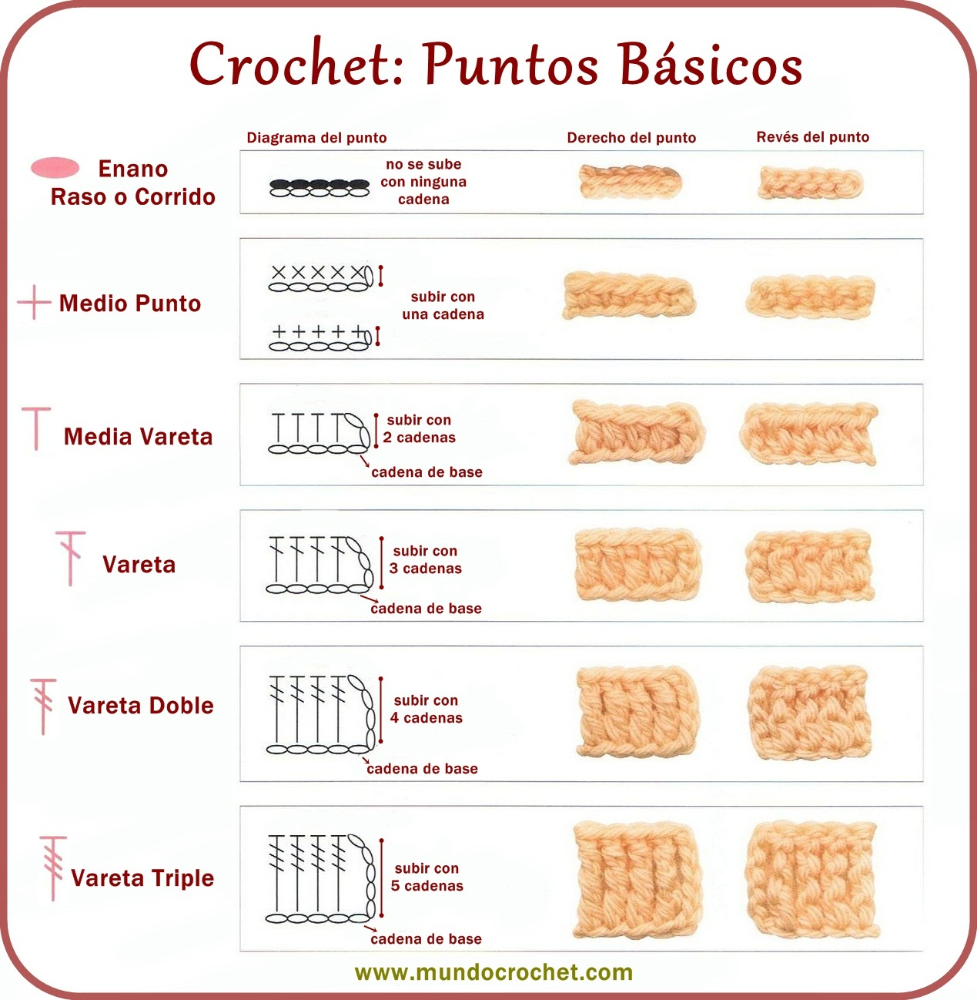

Curso de tejido a crochet
A continuación te comparto una lista con los nombres de puntadas desde la básica hasta la más avanzada
Puntos básicos a crochet
- Cadeneta: es el punto con el que empiezan la mayoría de proyectos a crochet.
- Punto enano: es utilizado para tejer o unir piezas.
- Medio punto o punto bajo: puedes usarlo para proyectos sencillos o complejos.
- Punto medio alto.
- Punto alto: es muy utilizado en la confección de prendas, es el doble de alto que el medio punto.
| Punto ESP | Abrev | Altura |
|---|---|---|
| Cadeneta | C. | - |
| Punto enano | P.e. | - |
| Punto bajo | P.b | |
| Punto medio alto | P.m | 2 |
| Punto alto | P.a | 3 |
